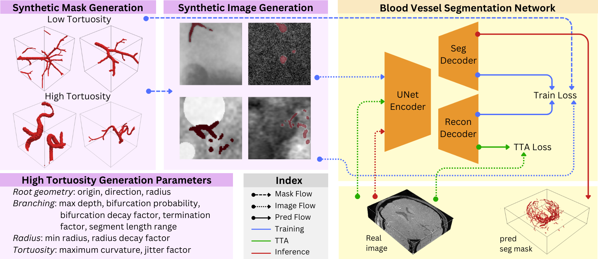
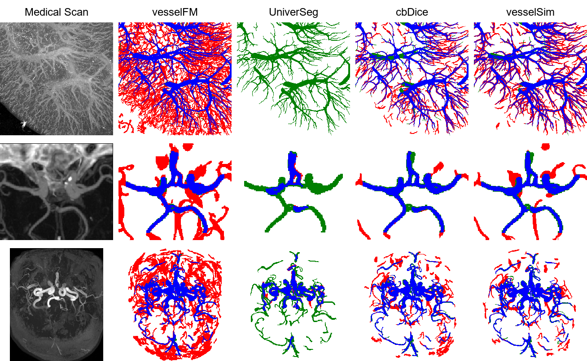

Blood vessel segmentation is a core task in medical image analysis for the care of vascular diseases and surgical planning, yet the challenges of providing expert vascular annotations pose a major obstacle for the progress of related deep learning techniques. To address this, we propose VesselSim, a two-stage framework for universal 3D blood vessel segmentation that eliminates the need for real annotated data during training. First, we introduce a stochastic, geometry-driven vascular simulation framework that models recursive branching, curvature-controlled growth, and collision-aware topology, followed by domain-randomized intensity synthesis to generate 16,500 anatomically plausible 3D angiographic volumes. Second, a 3D U-Net is trained solely on this synthetic data. To bridge the domain gap from synthetic to real images at inference time, we introduce a test-time adaptation strategy via a self-supervised mask reconstruction decoder, enabling adaptation to unseen clinical scans without prior domain knowledge. We evaluate VesselSim in a zero-shot setting on multiple real-world datasets spanning MR and CT across several anatomical regions, including the brain and kidneys. Despite being trained exclusively on synthetic data, VesselSim achieves performance competitive with state-of-the-art vascular segmentation foundation models. These findings suggest that learning vessel geometry from synthetic tubular structures is effective for robust cross-domain generalization, substantially reducing the reliance on acquired medical imaging data and more importantly, expert annotations.

We evaluate on two publicly available medical image repositories, HiP-CT and TopCoW. HiP-CT consists of three ultra–high-resolution 3D human kidney volumes acquired using Hierarchical Phase-Contrast Tomography. TopCoW includes 125 computed tomography angiographies (CTA) and 125 magnetic resonance angiographies (MRA) of the human brain. For TopCow CTA, manual annotations are provided for the Circle of Willis. Volumes are cropped to the bounding box of this region to avoid penalizing predictions outside the territory. For TopCoW MRA , we use the VesselVerse extension, which expands the vessel annotations to the full brain. Thus allowing us to assess robustness across organ systems (kidney, Circle of Willis, full brain) and across imaging contrasts (HiP-CT, CTA and MRA).
Comparison of segmentation performance across datasets. VesselSim denotes our final model with CE + Dice + cbDice + Reconstruction TTA. Best results are shown in bold, second best results are underlined.
| Model | TopCoW CTA | TopCoW MRA | HiP-CT | |||
|---|---|---|---|---|---|---|
| Dice | clDice | Dice | clDice | Dice | clDice | |
| Foundation Model Baselines | ||||||
| VesselFM | 52.9±9.5 | 58.9±10.2 | 48.3±8.1 | 46.9±9.1 | 35.1±24.5 | 25.6±19.5 |
| SAM-Med3D | 6.6±4.4 | 9.1±6.0 | 3.1±2.6 | 2.6±2.2 | 8.0±21.6 | 3.1±8.9 |
| UniverSeg | 19.7±8.6 | 29.4±12.3 | 48.2±5.1 | 47.0±6.1 | 4.7±21.1 | 0.0±0.0 |
| Ablation Studies | ||||||
| Base UNet | 42.7±12.2 | 60.6±12.7 | 70.1±3.9 | 73.1±5.1 | 34.3±23.0 | 23.0±42.7 |
| + cbDice | 46.8±12.9 | 62.9±13.6 | 72.6±3.5 | 75.7±4.4 | 31.1±23.7 | 41.2±25.1 |
| + recon | 43.1±14.1 | 60.6±13.3 | 71.9±3.9 | 74.6±5.2 | 36.0±22.7 | 41.3±23.1 |
| VesselSim | 48.7±11.9 | 64.0±13.0 | 71.8±3.3 | 76.2±4.1 | 31.6±21.5 | 42.3±23.8 |
| + finetuned | 59.5±7.7 | 70.4±7.3 | 77.3±3.3 | 83.2±3.6 | 46.8±33.2 | 50.7±27.8 |
Maximum intensity projections of the input scan and different model predictions. From top to bottom: HiP-CT, TopCoW CTA, TopCoW MRA. For the predictions, true positives are shown in blue, false positives in red, and false negatives in green. SAM-Med3D visualizations are omitted due to consistently low segmentation performance across datasets.

@misc{rainville2026vesselsim,
title={VesselSim: learning 3D blood vessel segmentation without expert annotations},
author={Erin Rainville and Melissa Ananian and Tristan Mirolla and Hassan Rivaz and Yiming Xiao},
year={2026},
eprint={2605.26277},
archivePrefix={arXiv},
primaryClass={cs.CV},
url={https://arxiv.org/abs/2605.26277},
}